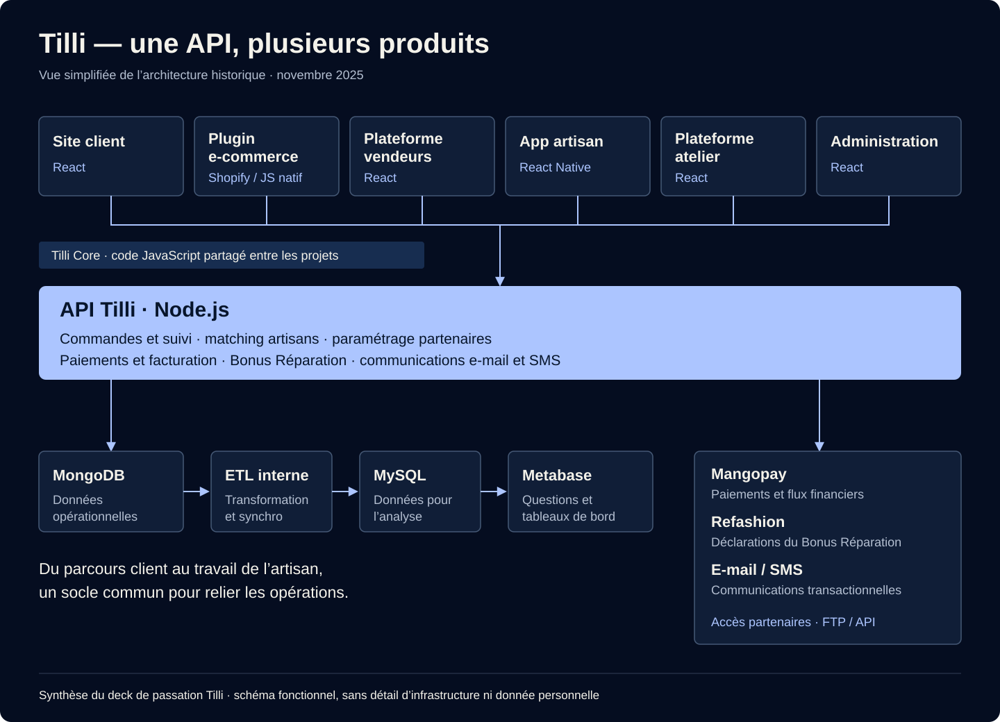
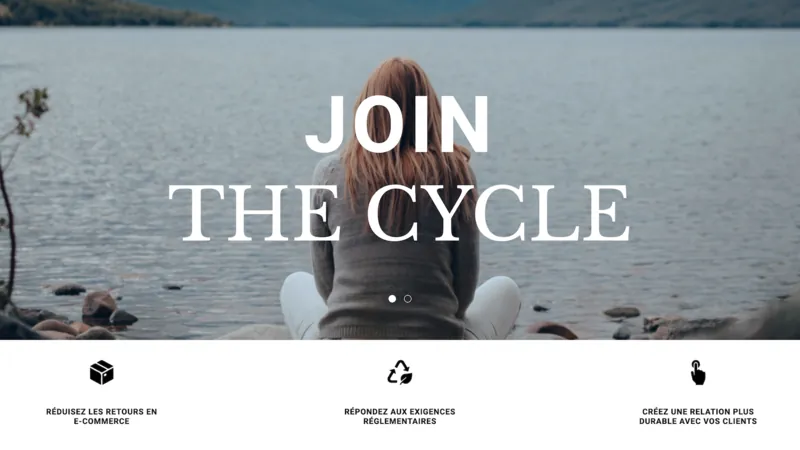
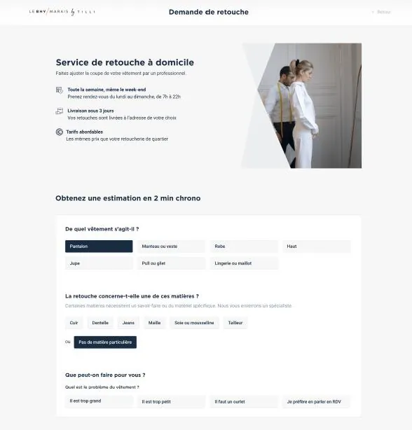
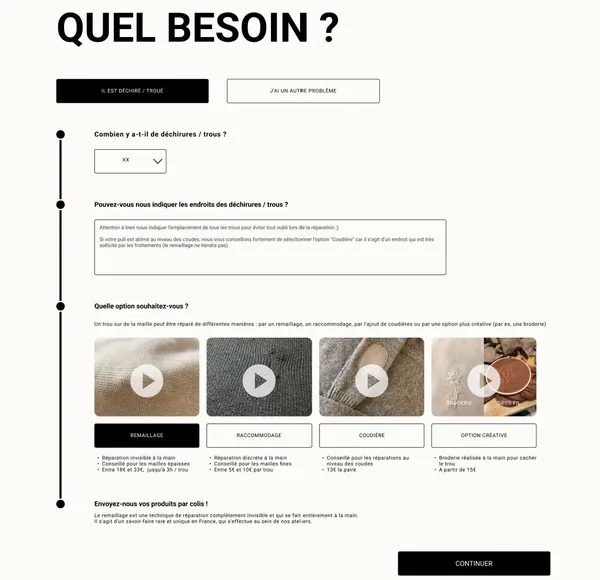
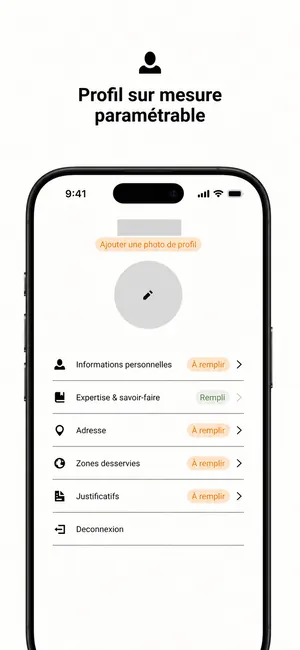
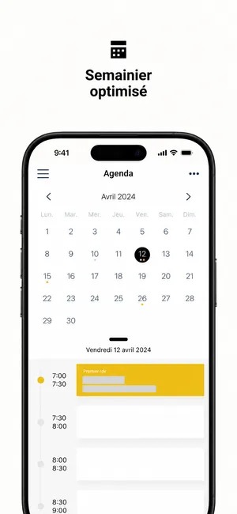
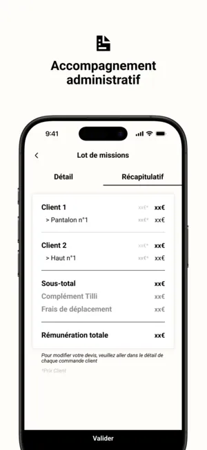
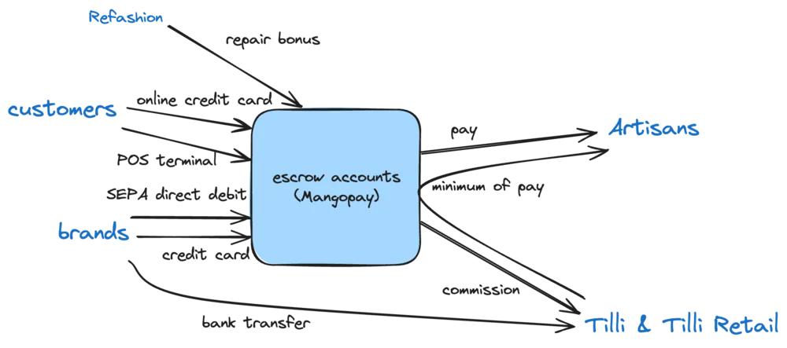
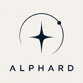

Construire votre produit
Des interfaces web aux services backend, je vous accompagne dans le développement de votre application.
Le sens du produit. Le souci du détail.

Je développe vos produits web et mobile avec une conviction : les bons choix techniques commencent par la compréhension du produit.
Découvrir mon travailDes interfaces web aux services backend, je vous accompagne dans le développement de votre application.
Donner à votre produit une expérience mobile cohérente, avec React Native et une attention portée aux performances.
Apporter un regard de CTO à vos décisions techniques. Partager les pratiques, travailler en pair et garder le cap sur les besoins produit.
Construire une technologie, c’est aussi construire l’équipe qui la fait vivre.
Chez Tilli, j’ai développé la technologie pendant neuf ans, des premières lignes de code à une équipe de huit personnes. Une expérience qui nourrit aujourd’hui mon approche du développement freelance.
Formation ingénieur à l’Ensimag
Informatique & mathématiques appliquées · 2012–2015
CTO & cofondateur · Développement fullstack et mobile · Leadership technique
Mettre en relation un client et un artisan n’est que le début du parcours. Il faut ensuite trouver le bon savoir-faire, organiser les rendez-vous, suivre les réparations et gérer les paiements.
Pendant neuf ans, j’ai développé la technologie de Tilli, des premières lignes de code à une équipe tech de huit personnes. Le produit a évolué vers un ensemble d’outils pour les clients, les artisans, les ateliers, les marques et les équipes internes.
Le site client, l’application mobile des artisans et les plateformes métier reposaient sur une API Node.js commune. Elle centralisait le suivi des commandes, l’algorithme d’affectation des missions, les conditions des partenaires, les paiements et la facturation.
Les interfaces web étaient développées en React, l’application mobile en React Native. Une bibliothèque JavaScript partagée, Tilli Core, permettait de réutiliser du code entre les projets.
Les données opérationnelles étaient stockées dans MongoDB. Un pipeline de transformation interne les synchronisait vers MySQL pour leur analyse dans Metabase. L’écosystème comprenait également des intégrations e-commerce, des exports partenaires et des connexions aux services de paiement, de communication et de Bonus Réparation.

Le parcours e-commerce permettait de préciser un besoin de retouche depuis un site partenaire. L’offre colis étendait le service à la réparation à distance, avec un choix guidé des prestations. Ces visuels historiques illustrent le site et la conception de ces parcours.



Sur iOS et Android, l’application réunissait les demandes de mission, l’agenda, le suivi des commandes et les informations de rémunération. Les visuels App Store ci-dessous présentent trois usages : personnaliser son profil, organiser ses rendez-vous et consulter le récapitulatif de ses missions.



Visuels de présentation de l’app sur l’App Store. Données personnelles masquées.
Ce projet m’a amené à travailler sur des sujets qui se répondent : affecter une mission selon les compétences et les disponibilités, partager les données entre plusieurs interfaces, orchestrer les flux de paiement et donner aux équipes les outils pour suivre l’activité.
C’est cette expérience de construction et d’évolution d’un produit dans la durée que j’apporte aujourd’hui à mes missions de développement.
Technologies : React · React Native · Node.js · MongoDB · MySQL · Metabase

Une sélection de projets personnels et d’explorations techniques partagés sur GitHub.
Explorer la réalité virtuelle dans le navigateur avec un jeu construit en React et A-Frame.
Une application de liste de courses pour explorer la création d’interfaces avec Preact.
Un plugin dédié à l’opérateur de coalescence des valeurs nulles dans l’écosystème Gatsby.
C’est un développeur passionné et pointu, avec une vision claire du produit et de fortes compétences tech.
Un produit à lancer, une application à faire évoluer,
une équipe à renforcer. Faisons connaissance.

Benjamin Michel, développeur indépendant.
J’exerce mon activité au sein d’Alphard, ma SASU.